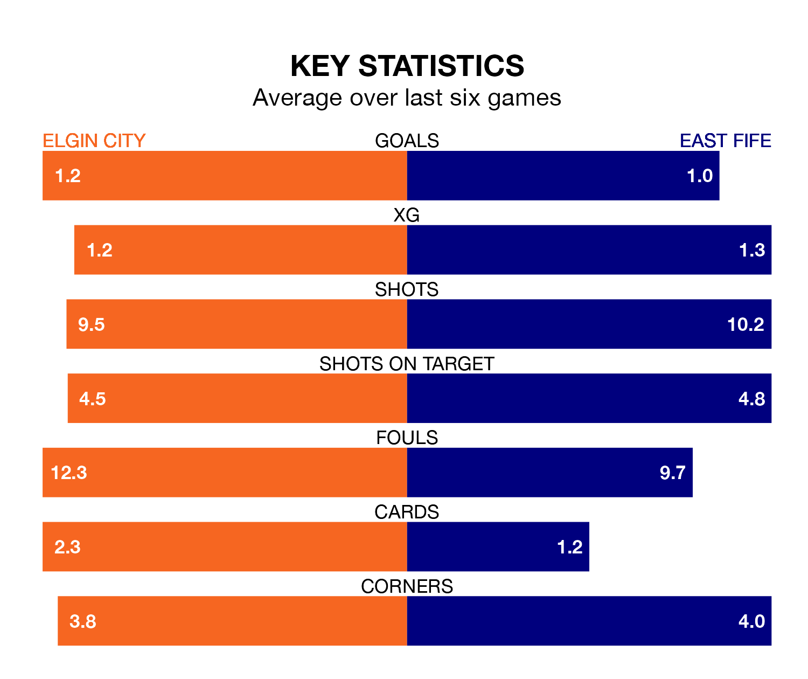

Struggling Elgin City face East Fife at Borough Briggs on Saturday looking to build on a win in their last league outing.
After securing all three points with a 2-1 victory over Clyde on Tuesday, the Black & Whites sit ninth in League Two.
They travel to play an East Fife side fifth in the standings, who lost in their last match, 3-0 against Spartans.
In the last 10 years, Elgin and East Fife have played each other on 17 occasions. Elgin won four of them, East Fife 11, and they drew twice.
On average, the Black & Whites scored 1.4 goals and the Fifers 2.2 in those matches.
Their last meeting was on December 9, when East Fife won 4-0 at home.
In Nathan Austin, East Fife have one of the league's most on-form strikers so far this season. He has notched nine goals in 21 appearances, to sit third in the scoring charts.
His goal rate of one every 182 minutes is quicker than that of Russell Dingwall, Elgin's top scorer with a goal every 341 minutes, and a total of four goals in 16 games.
With 18 goals in 21 games so far this season, City are the league's lowest scorers with 0.9 goals per game. And they are conceding more than average, letting in 38 goals at a rate of 1.8 per game.
The Fifers are also below average scorers, with 1.3 goals per game, compared to a league average of 1.4. They have conceded 1.4 goals per game.
The Black & Whites are in mixed form in League Two, with three wins and three losses from their last six games.
With two wins and three draws over that period, the visitors' form is similar – they have both taken nine points from 18.
Updated: 14:12 (UTC), 02/02/24